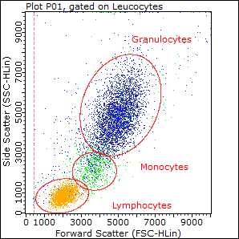

Laboratories

Human Ecological Immunology Lab
The Human Ecological Immunology Lab focuses on analysis of immune function through flow cytometry and immunoassays. In additiona to sharing the facilities of the Human Biodemography Lab, the Human Ecological Immunology lab features a Guava EasyCyte 6HT flow cytometer for immunophenotyping, viability assays, and other experiments. We also feature a MagPix for multiplex assays of cytokines and other biomarkers.
Human Biodemography Laboratory
Under the direction of Broom Center Biodemography Theme Director Michael Gurven and Broom Research Associate Aaron Blackwell, the Human Biodemography Laboratory integrates evolutionary biology and demography to better understand the range of variation in human health, physiology, and the life course from infancy to old age. This fully functional BSL-2 wet lab utilizes enzyme immunoassays to measure biomarkers of stress, immune function, nutritional status, infection, and reproductive hormones to explore the individual and population-level determinants of human health, and to test functional hypotheses from an evolutionary perspective. Specializing in high-throughput biomarker quantification in blood, urine, and saliva, this facility serves UCSB researchers and others interested in biological aspects of human health and development in clinical, field, and experimental settings.